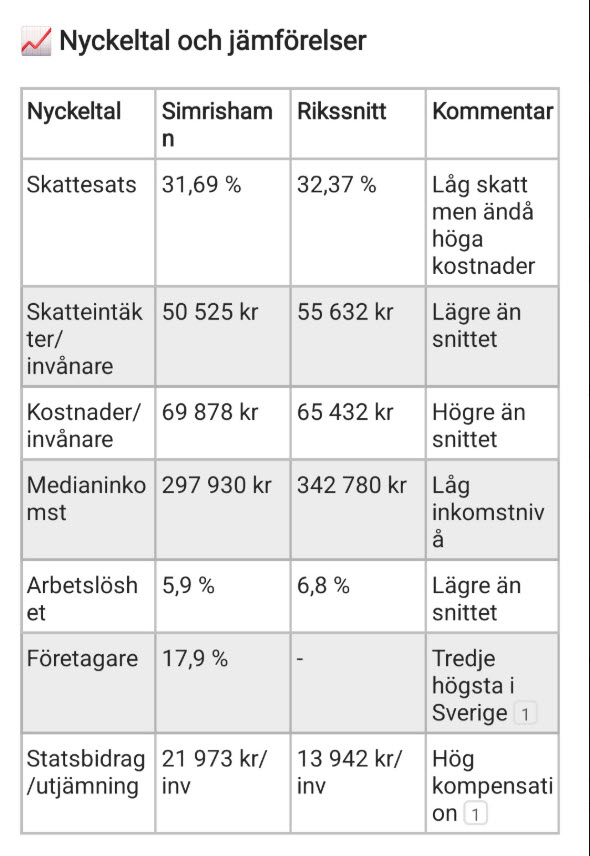

🎨 5 frågor om kultur, kommunal verksamhet och svenska kulturarv

Svenska kulturkanon möter kommunal verksamhet i Simrishamn
Teknologier:
Funktioner:
Design:
Kompatibilitet: Fungerar i alla moderna webbläsare
Jag vill att du återanvänder samma programmeringsteknik som finns i quiz.html filen. Använd på samma sätt HTML, JavaScript och CSS för att skapa ett snyggt och lättnavigerat quiz.
Men att du skapar ett nytt quiz i en index.html fil. Filen quiz.html ska hela tiden vara oförändrad.
Nya quiz-frågor om svenska kulturkanon:
Kulturkanonkopplingar: Varje fråga kopplas till svenska kulturkanon med verk som Carl Larssons Sundborn, Strindbergs Fröken Julie, TV-serien "Hem till byn", Selma Lagerlöfs "Gösta Berlings saga" och Bergmans "Nattvardsgästerna".
Designkrav: Samma färgtema och funktionalitet som quiz.html, med responsiv design och moderna interaktionseffekter.